Wrap the ends of the string around the middle finger of each hand.
Use the thumb and finger to guide the string. Go back and forth to slide the string between two teeth. Be careful not to let it snap down and hurt the gums.
Upper teeth
Lower teeth
With your fingers pull the string against the side of one tooth. Now move the string up and down. Do not pull the string back and forth or it will cut the gum.
Lift the string over the pointed gum and clean the other tooth.
When you have cleaned both teeth, release the string from one finger and pull it out from between the teeth. Then wrap it around your two middle fingers once again, and clean between the next two teeth.
remember: clean teeth and good food will prevent almost all dental problems.
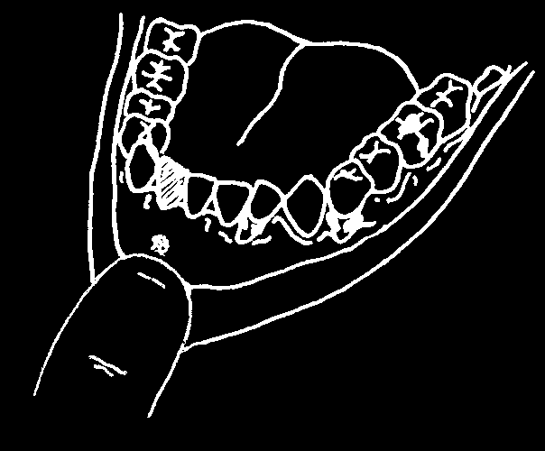
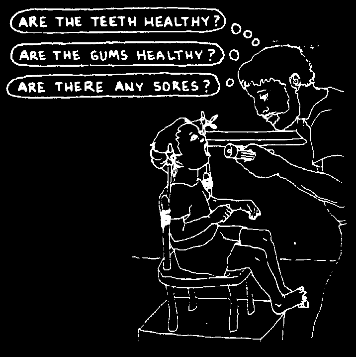


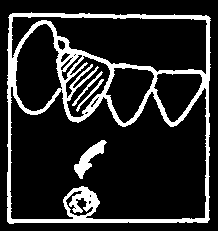
CHAPTER
Examination and Diagnosis
Whenever you do an examination, remember to examine the mouth.
You can prevent much suffering and serious sickness when you notice and treat problems early.
Whenever you hold a health clinic, try to find out how healthy each person’s mouth is.
Ask if she is having a problem now, or has had a problem recently.
Always write down what you find out, so you remember what treatment that
When you look inside someone’s person needs.
mouth, ask yourself these questions.
1. Are the teeth healthy? Look for:
Tell the person what is
1. A New happening and how to
Tooth keep the skin around it healthy (page 66).
They may be cavities
2. Black which should be
Spots filled when they are still small (page 47).
Tell the person what is
3. A Loose happening and how to prevent
Tooth it from getting worse or affecting other teeth (page 54).
A tooth that is dark is dead and infection
4. A Dark from its root can go into the bone (page 47).
Tooth
This can make a sore on the gums (page 74).
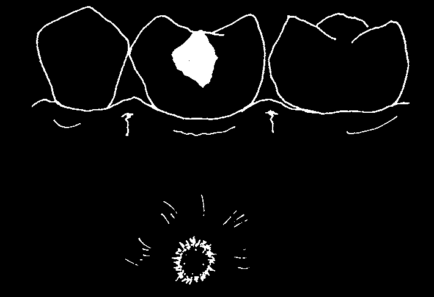
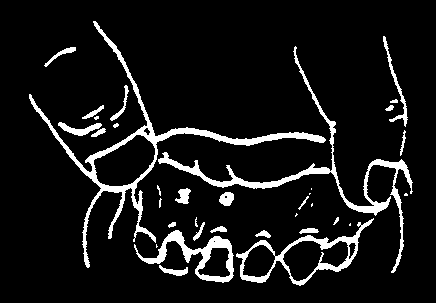
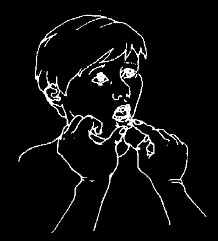

2. Are the gums healthy?
Look at page 52 and compare the pictures of healthy and unhealthy gums.
Unhealthy gums often are red and they bleed when you touch them.
A bubble on the gums below the tooth is a clear sign that the person has an abscess. The abscess may be from the tooth, or it may be from the gums. To decide, look carefully at both the tooth and the gum around it.
A bubble beside a healthy tooth is a sign of infected gums. Scale the tooth carefully.
See Chapter 8.
A bubble beside a decayed tooth is a sign of a tooth abscess. (See page 93.)
A sore on the gums from a badly decayed
GUM BUBBLE
tooth appears when a gum bubble breaks open and lets out the pus from inside.
3. Are there any sores?
Look for sores under the smooth skin on the inside of the lips and cheeks. Look also under the tongue and along its sides.
1. A sore on the
2. Sores on the inside
3. Sores on the gums may be of the lip or cheek lips or tongue from an infected may be from a may may be tooth (p. 93).
virus (p. 104).
cancer (p. 125).
After your examination, tell the person what you have found. If you notice a problem starting, explain what to do to prevent it from getting worse. If there are no problems and the mouth is healthy, congratulate the person.
Share your knowledge—explain things to people.
Help them Iearn how they can prevent and even manage their own problems with their teeth.

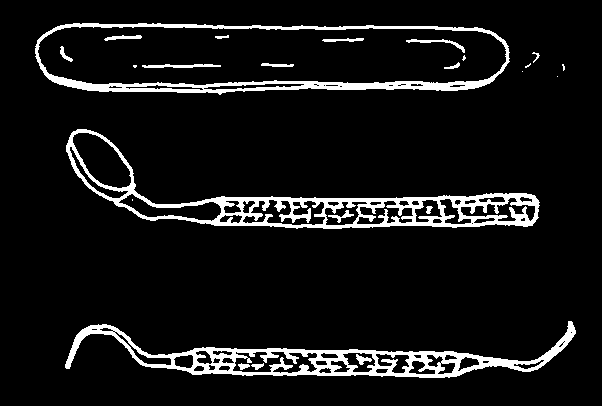
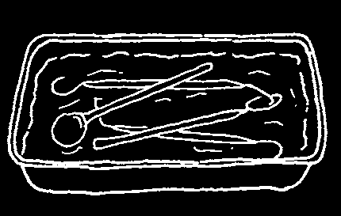
WHERE TO EXAMINE
Examine people in a light and bright place. It is dark inside a person’s mouth, so you need light to see the teeth and gums.
Use the sun. Examine outside, or inside a room facing the window. With sunlight alone, you will be able to see most places in the mouth well enough. If you cannot, set up a lamp or have someone hold a lamp for you.
Reflect the light off a small mouth mirror onto the tooth or gum.
If you have a low chair, lift up the person’s chin so that you do not have to bend over as far when you look into the mouth. An even better way is to have the person sit on some books. The person’s head can lean back on a piece of cloth.
Use an old chair with a strong back.
Attach two flat sticks to the chair. Then tie a strip of clean cloth to the sticks. Tie it strong enough to support the head, but loose enough to let the head lean back.
THE INSTRUMENTS YOU NEED
Three instruments are really enough:
1. A wooden tongue blade to hold back the cheek, lips, and tongue.
2. A small mirror to let you look more closely at a tooth and the gums around it.
3. A sharp probe to feel for cavities and to check for tartar under the gum.
If you have many people to examine, it is helpful to have more than one of each instrument. But be sure they are clean.
Dirty instruments easily can pass infection from one person to another. After you finish an examination, clean your instruments in soap and water and then leave them in a germ-killing solution like the ones described on page 89.
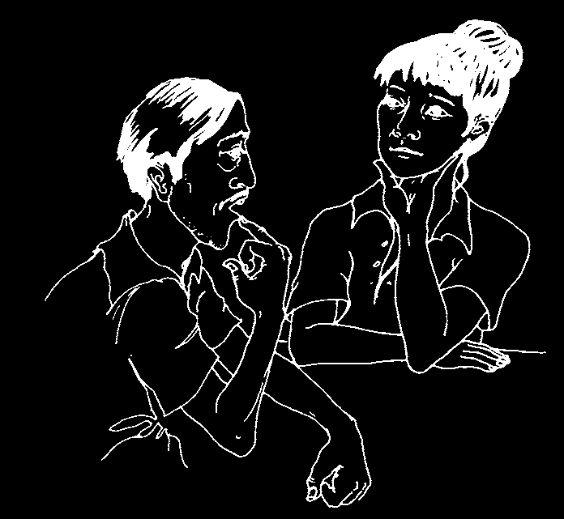
A GOOD DIAGNOSIS
You are making a diagnosis when you decide what a person’s problem is and what is causing it. To do this, you need information. You need to make a careful examination to make a good diagnosis.
Learn all you can about the person’s problem:
1. Ask questions about the problem.
2. Look at the person’s face. Think about the person’s age.
3. Examine the mouth more carefully than before.
4. Touch the place that is sore.
1. Ask the person about the problem.
Give a sick person a chance to describe how he is feeling.
Listen. Think about what possibly is happening in his mouth.
You may have an idea about what the person has. Now try to find out more by asking questions:
• What is the problem? Ask him to talk about the pain, swelling, bleeding, or whatever he is feeling.
• Where does it feel that way? See if he can put his finger on the tooth or place that is bothering him.
• When do you have the most pain? Find out if it happens all the time or only some of the time (for example, when he drinks something very cold).
• When did it start? Find out if he has already had this problem before.
Ask how he took care of it.
• Have you had an accident or injury lately? Infection still inside the bone from an old injury in the mouth can make a sore on his face, or start swelling.
• Are you having other problems? A head cold or fever can make the teeth hurt.
• How old are you? Think about a new tooth coming into the mouth.
After you hear the answers to your questions, decide if your original idea is the correct diagnosis. If not, try to think of another possibility and ask more questions. This is the scientific method of making a diagnosis.
For a good explanation of scientific method, see Chapter 17 of Helping
Health Workers Learn.

When you talk to a woman, find out if she is pregnant. A pregnant woman’s gums can easily become infected. The gums may bleed and she may have more tooth decay.
But this does not have to happen.
If a pregnant woman takes extra care of her teeth and gums, she can prevent most dental problems. But if she already has a problem, do not wait for the baby’s birth before you help her. You can treat a pregnant
Train midwives to examine woman’s mouth problems now. In women’s mouths. When fact, this may be an important way of they send women to you for dental care, they can give protecting her baby as well (see pages you helpful information
15 to 16).
about the women’s health.
Caring for a pregnant woman—a guide for dental workers
1. Ask her how many months she has been pregnant and find out if she has high blood pressure. Any person with blood pressure over
150/100 may bleed excessively after extraction.
To get this information, encourage all women to have regular check-ups with a midwife or a trained health worker who has equipment for measuring blood pressure.
2. Do not take X-rays of teeth unless absolutely necessary. X-rays are dangerous to the unborn baby inside. Before an X-ray, always cover the mother’s chest, belly, and thighs with an apron lined with lead.
3. Do not give her tetracycline or doxycycline while she is pregnant or breastfeeding.
4. Always give a careful and complete mouth examination. Tell her what treatment she needs and how to prevent tooth problems.
5. Be gentle. Show the woman that you care, that you want her to be comfortable, and that you can treat her without hurting her.
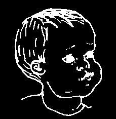
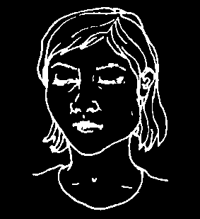

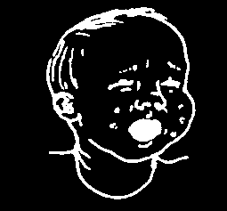
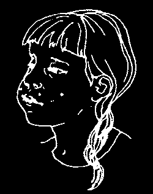
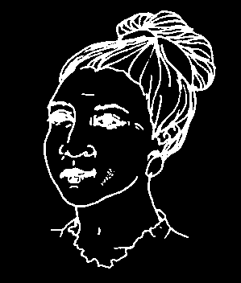
2. Look at the person.
People have some problems more often at certain ages. When a person first comes in to see you, notice his age. Then, before you ask him to open his mouth, look at his face for a sore or swollen area.
SWELLING
CHILD
YOUNG PERSON
ADULT
Swelling can come from:
Swelling can come from:
Swelling can come from:
• mumps
• a new tooth growing
• a tooth abscess (p. 93)
• an infection in the spit in (p. 100)
• a broken jaw (p. 113)
gland (p. 119)
• a tooth abscess (p. 93)
• a tumor (p. 125)
• a tooth abscess (p. 93)
A SORE
CHILD
YOUNG PERSON
ADULT
A sore can come from:
A sore can come from:
A sore can come from:
• impetigo
• fever blisters (p. 104)
• a tooth abscess (p. 93)
• Vincent’s infection
• a tooth abscess (p. 93)
• a bone infection
(p. 102)
(osteomyelitis)
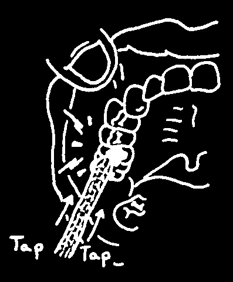
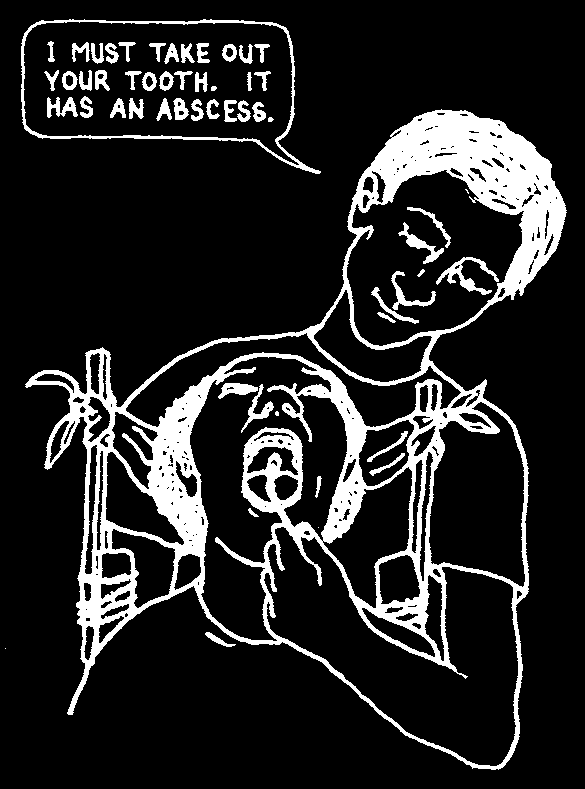


3. Examine inside the mouth.
remember what the person said, the person’s age, and what you saw.
Now look more closely at the problem area.
Look at the teeth:
• Is a new one growing in?
• Is a tooth loose?
• Is there a dark (dead) tooth?
Look at the gums:
• Are they red?
• Is there any swelling?
• Do they bleed?
• Are the gums eaten away between the teeth?
Look also for sores on the inside of the cheek or lips, and on the tongue.
4. Touch the sore place.
Touching is a good way to find out how serious the problem is. This will help you decide which treatment to give.
Push gently against each tooth in the area of pain to see if a tooth is loose. Rock the loose tooth backward and forward between your fingers, to see if it hurts when you move it.
Using the end of your mirror, tap against several teeth, including the one you suspect.
There is probably an abscess on a tooth that hurts when you tap it.
Press against the gums with cotton gauze. Wait a moment, and then look closely to see if they start bleeding. Then use your probe gently to feel under the gum for tartar. Carefully scrape some away. Wait and look again to see if the gums bleed. When gums bleed, it is a sign of gum disease.
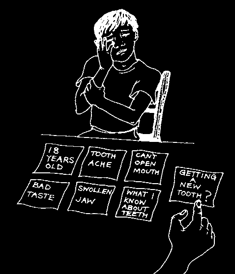
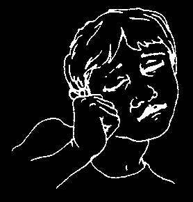

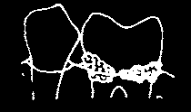


LEARN TO TELL SIMILAR PROBLEMS APART
If a person comes to you with a toothache or a sore or a loose tooth, there are many possible causes for each problem. The first thing you notice—the toothache, sore or loose tooth—is your first step to a diagnosis. To this you must add more information before you can point to the most probable cause.
Put together what you have found with what you already know about teeth and gums. You can make a good diagnosis of a problem without knowing a special name for it.
Usually it is easy to make a diagnosis. However, sometimes you will not be sure, and these are the times to seek the advice of a more experienced dental worker. Never pretend to know something you do not. Only treat problems that you are sure about and have supplies to treat properly.
See Where There Is No Doctor, p. w4.
Use the charts beginning here to help you make the diagnosis. For more practice using charts to tell problems apart, see Chapter 21 of Helping
Health Workers Learn.
IF THE PERSON
AND YOU FIND OUT
HE/SHE
SEE
HAS
THAT
MAY HAVE
PAGE
It hurts only after eating or drinking. There is a cavity, but the a cavity tooth does not hurt when you tap it.
Part of the filling has fallen out, or is a cavity cracked and ready to fall out. Eating under an and drinking make the tooth hurt.
old filling
The tooth hurts when chewing food.
A TOOTHACHE
tartar
It may hurt when tapped, but there is between no cavity and the tooth looks healthy.
the teeth
It hurts all the time—even when person tries to sleep. The tooth hurts when you tap it and it feels a an abscess bit loose.
It hurts when person breathes in cold a cracked air. The tooth was hit recently.
or broken tooth
He cannot open his mouth properly.
Steady pain and a bad taste are a new tooth coming, from the back of the mouth.
growing in
Several top teeth hurt, even when you tap them. She had a head cold an infected and can only breathe through her sinus mouth.